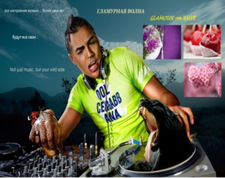

| глаМУРная волна (Интернет-радиостанция твоей души) |  |
| Пользовательское соглашение | Слушай новую песню и оцени! | Гостевушка | Наши DJ | Новости о Гламуре | Любимые ссылки | Анкетирование |
|
 Гламурная Волна вещает 748 дней! 
|
Ура! Уже более 2-х лет интернет-радиостанция *ГлаМУРная волна* в Эфире!
Наше сотрудничество с ALEX FM и "ULTRA" продолжается! Наши ведущие - Dj Urfin, Rj Alex, АлёSHA, Катерина!
Live проходит с 17-00 до 21-00 (мск время), но в летнее время не ежедневно !!!
"Гламурка" - это волна, по которой хочется плыть вашим ушкам) и не только ... !) "В КОНТАКТЕ" открыта наша страничка http://vk.com/club23250821 (КЛУБ "ГЛАМУРНАЯ ВОЛНА ФМ"). Добавляйся в друзья! Найди нас в приложении YO!tuner в Google play! Закачай в свой планшет или мобильник и .... наслаждайся нашими эфирами где тебе захочется! |